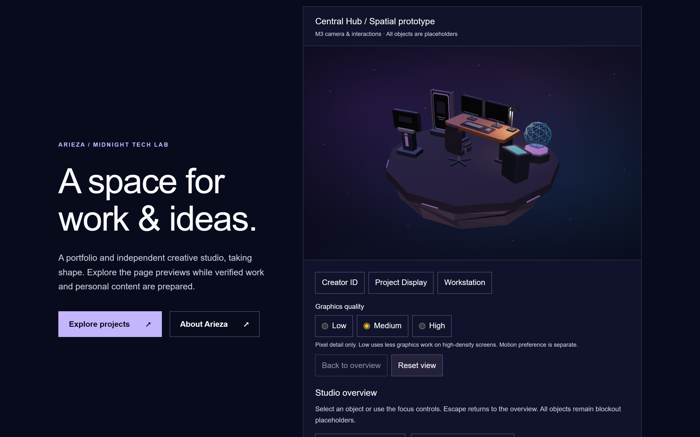
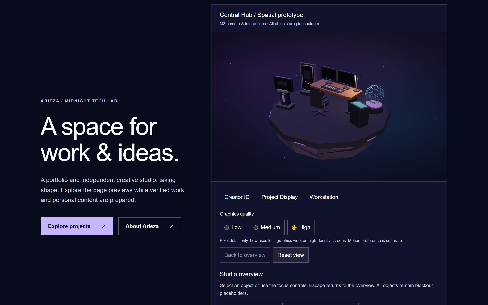
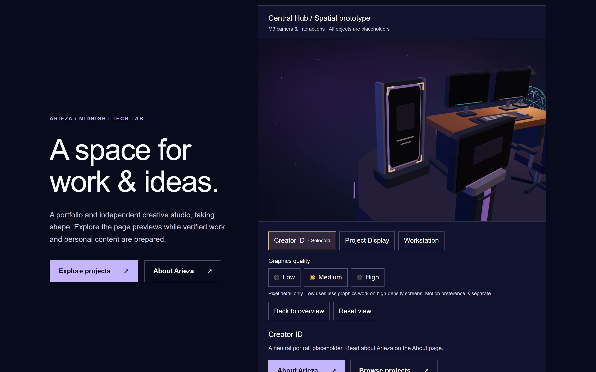
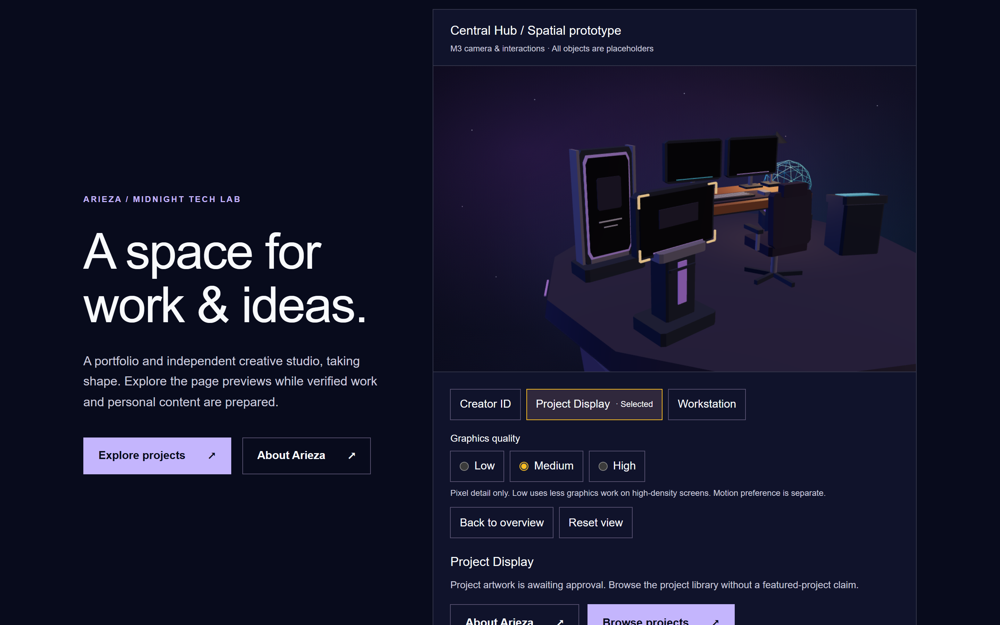
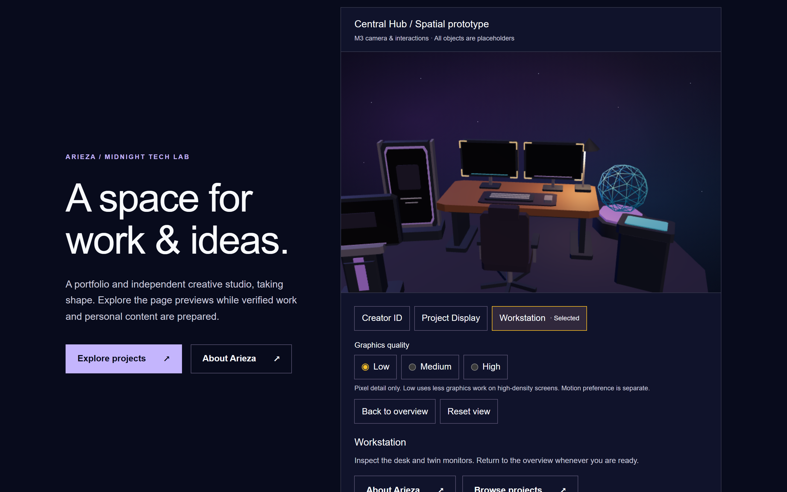

Matching 1440×900 Chromium captures, device scale factor 2. Low / Medium / High cap DPR at 1 / 1.5 / 2. Geometry, lighting, colors and camera poses are identical. Differences are primarily pixel density. Low is the conservative default. No FPS or physical GPU compatibility claim.




